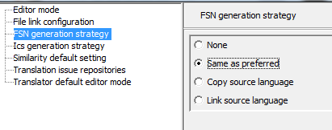

Defines the action to be taken when a preferred term is saved and there is still no FSN for
the concept.

- None: no FSN is generated
- Same as preferred: generates a FSN in the target language, with the same text as
the preferred and the translated semantic tag. Translation of the semantic tag hierarchy
is a pre-requisite for semantic tag generation
- Copy source language: generates a new description in the target language, with
new IDs, identical to the source FSN
- Link source language: includes the source language FSN in the target language
refset, as the new FSN, keeping the same identifiers